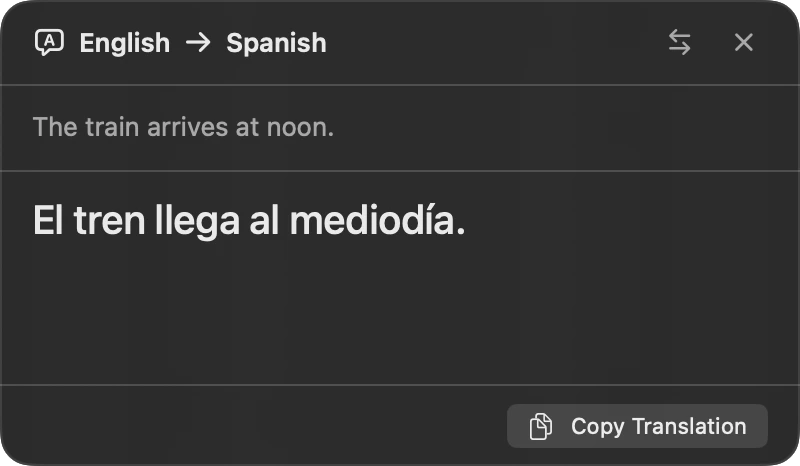
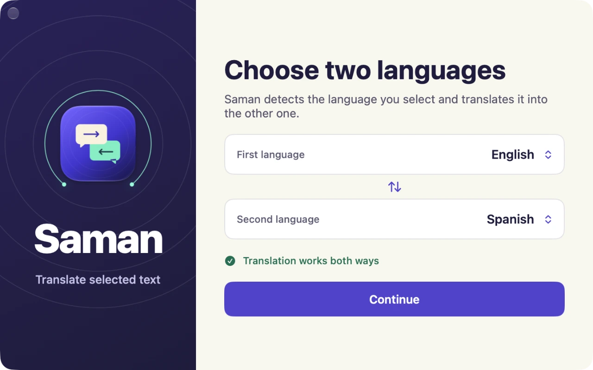

Traducción local para macOS
Traduce texto
de cualquier app.
Selecciona texto en un navegador, documento o chat y haz clic en la burbuja morada para ver la traducción al lado. También puedes traducir texto copiado desde la barra de menús.
Mac con chip de Apple · macOS 27 o posterior
The train arrives at noon.

Dos idiomas.
En ambos sentidos.
Elige dos idiomas compatibles. Saman detecta el idioma del texto que seleccionas y lo traduce al otro. Puedes invertir el sentido de la traducción en la misma ventana.
En los ajustes puedes cambiar el par de idiomas, elegir el idioma de la interfaz o hacer que Saman se abra al iniciar sesión.

Traduce con un atajo.
Usa el atajo donde Saman pueda leer el texto seleccionado. Puedes mover la ventana de traducción o copiar el resultado.
Tu texto se queda en tu Mac.
Saman traduce tu texto en tu Mac con el motor de traducción de Apple.
Empieza a usar Saman.
Abre Saman
Descarga el ZIP, descomprímelo y abre Saman.app. La primera vez podrás copiar Saman a la carpeta Aplicaciones.
Elige dos idiomas
Elige los idiomas entre los que quieres traducir. Es posible que macOS te pida descargar los modelos de idioma la primera vez.
Concede acceso de accesibilidad
Concede el permiso para que Saman pueda leer tu selección. Selecciona texto y haz clic en la burbuja morada o pulsa ⌥⇧T.
Versión actual: firma ad hoc, sin certificación notarial de Apple. Si macOS bloquea la apertura y confías en la descarga, sigue los pasos de Apple para abrir la app. Instrucciones de Apple.
Preguntas frecuentes
¿Por qué necesita Saman acceso de accesibilidad?
Con este permiso, Saman puede leer el texto seleccionado y colocar la burbuja al lado. Puedes traducir texto copiado sin este permiso.
¿Qué hago si no aparece la burbuja?
Algunas apps no comparten el texto seleccionado a través de Accesibilidad. Copia el texto y elige «Translate Copied Text» en el menú de Saman.
¿Puedo compilar Saman a partir del código fuente?
Sí. En el repositorio encontrarás el código en Swift, los scripts de compilación y las instrucciones para contribuir. Contribuir en GitHub.